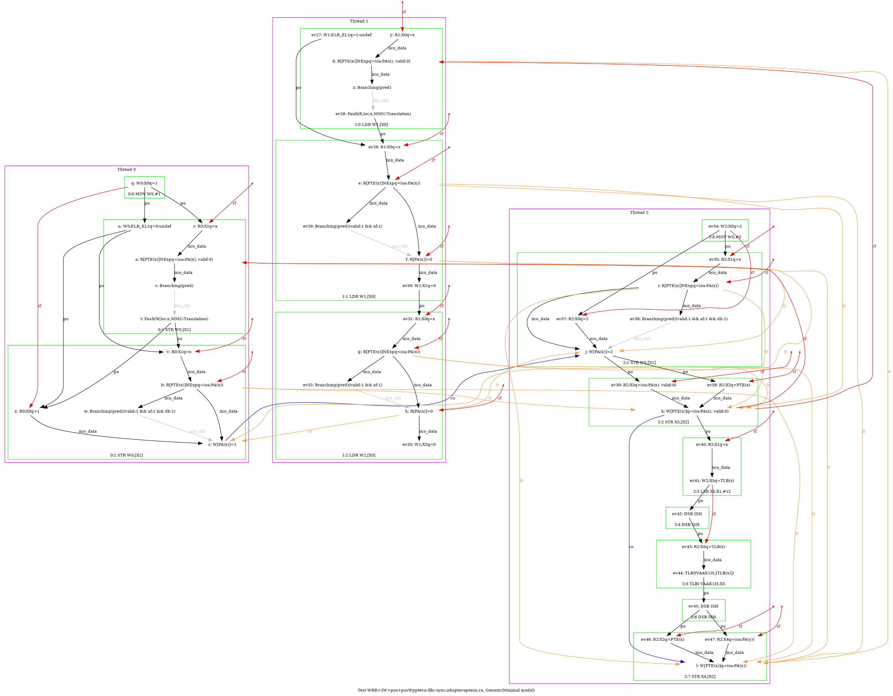
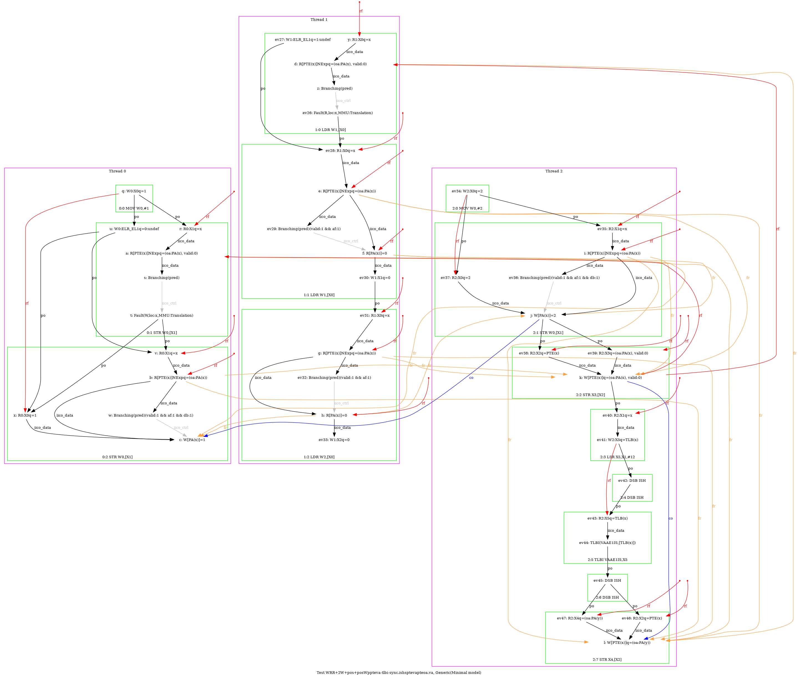
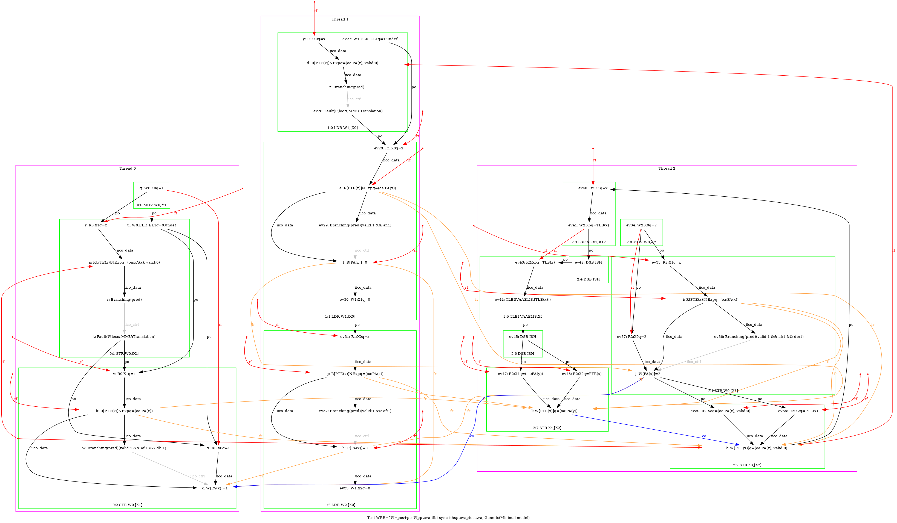
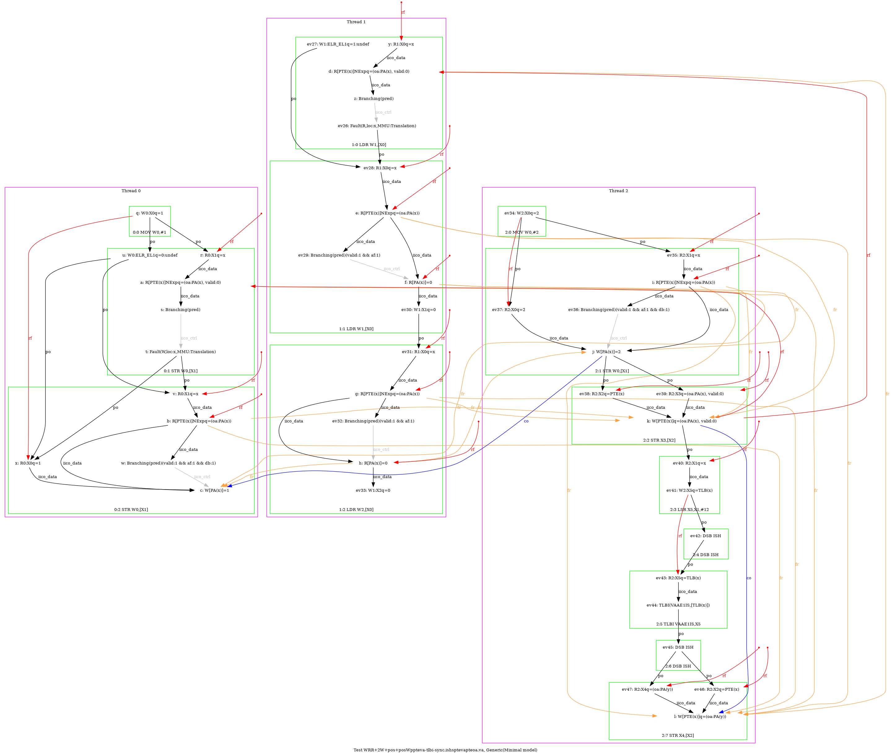
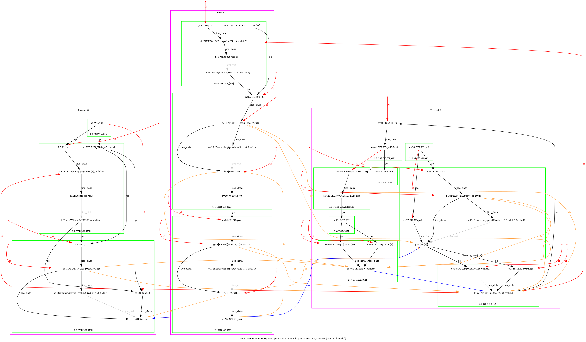

   …
 …
AArch64 WRR+2W+pos+posWppteva-tlbi-sync.ishsptevapteoa.va
"Rfe PosRR Fre PosWWPPteVA TLBI-sync.ISHsWWPteVAPteOA.VA CoePteOA.VAP"
Variant=imprecise
Cycle=Rfe PosRR Fre PosWWPPteVA TLBI-sync.ISHsWWPteVAPteOA.VA CoePteOA.VAP
Relax=[PteVA,TLBI-sync.ISHsWW,PteOA,PteVA]
Safe=Rfe Fre Coe PosWW PosRR
Generator=diy7 (version 7.56+02~dev)
Com=Rf Fr Co
Orig=Rfe PosRR Fre PosWWPPteVA TLBI-sync.ISHsWWPteVAPteOA.VA CoePteOA.VAP
{ int x=0; int y=4;
0:X1=x;
1:X0=x;
2:X1=x; 2:X2=PTE(x); 2:X3=(oa:PA(x), valid:0); 2:X4=(oa:PA(y));
}
P0 | P1 | P2 ;
MOV W0,#1 | LDR W1,[X0] | MOV W0,#2 ;
STR W0,[X1] | LDR W2,[X0] | STR W0,[X1] ;
| | STR X3,[X2] ;
| | LSR X5,X1,#12 ;
| | DSB ISH ;
| | TLBI VAAE1IS,X5 ;
| | DSB ISH ;
| | STR X4,[X2] ;
exists (1:X1=0 /\ 1:X2=0 /\ [x]=1 /\ fault(P0,x,MMU:Translation) /\ ~fault(P1,x) /\ ~fault(P2,x)) \/ (1:X1=0 /\ 1:X2=0 /\ [x]=1 /\ fault(P0,x,MMU:Translation) /\ fault(P1,x,MMU:Translation) /\ ~fault(P2,x)) \/ (1:X1=0 /\ 1:X2=0 /\ [x]=1 /\ fault(P1,x,MMU:Translation) /\ ~fault(P0,x) /\ ~fault(P2,x)) \/ (1:X1=0 /\ 1:X2=0 /\ [x]=2 /\ fault(P0,x,MMU:Translation) /\ fault(P1,x,MMU:Translation) /\ ~fault(P2,x)) \/ (1:X1=0 /\ 1:X2=0 /\ [x]=2 /\ fault(P1,x,MMU:Translation) /\ ~fault(P0,x) /\ ~fault(P2,x)) \/ (1:X1=0 /\ 1:X2=1 /\ [x]=1 /\ fault(P0,x,MMU:Translation) /\ ~fault(P1,x) /\ ~fault(P2,x)) \/ (1:X1=0 /\ 1:X2=1 /\ [x]=1 /\ fault(P0,x,MMU:Translation) /\ fault(P1,x,MMU:Translation) /\ ~fault(P2,x)) \/ (1:X1=0 /\ 1:X2=1 /\ [x]=1 /\ fault(P1,x,MMU:Translation) /\ ~fault(P0,x) /\ ~fault(P2,x)) \/ (1:X1=0 /\ 1:X2=2 /\ [x]=1 /\ fault(P0,x,MMU:Translation) /\ ~fault(P1,x) /\ ~fault(P2,x)) \/ (1:X1=0 /\ 1:X2=2 /\ [x]=1 /\ fault(P0,x,MMU:Translation) /\ fault(P1,x,MMU:Translation) /\ ~fault(P2,x)) \/ (1:X1=0 /\ 1:X2=2 /\ [x]=1 /\ fault(P1,x,MMU:Translation) /\ ~fault(P0,x) /\ ~fault(P2,x)) \/ (1:X1=0 /\ 1:X2=2 /\ [x]=2 /\ fault(P0,x,MMU:Translation) /\ fault(P1,x,MMU:Translation) /\ ~fault(P2,x)) \/ (1:X1=0 /\ 1:X2=2 /\ [x]=2 /\ fault(P1,x,MMU:Translation) /\ ~fault(P0,x) /\ ~fault(P2,x)) \/ (1:X1=0 /\ 1:X2=4 /\ [x]=1 /\ fault(P0,x,MMU:Translation) /\ ~fault(P1,x) /\ ~fault(P2,x)) \/ (1:X1=0 /\ 1:X2=4 /\ [x]=1 /\ fault(P0,x,MMU:Translation) /\ fault(P1,x,MMU:Translation) /\ ~fault(P2,x)) \/ (1:X1=1 /\ 1:X2=1 /\ [x]=1 /\ fault(P0,x,MMU:Translation) /\ ~fault(P1,x) /\ ~fault(P2,x)) \/ (1:X1=1 /\ 1:X2=1 /\ [x]=1 /\ fault(P0,x,MMU:Translation) /\ fault(P1,x,MMU:Translation) /\ ~fault(P2,x)) \/ (1:X1=1 /\ 1:X2=2 /\ [x]=2 /\ fault(P0,x,MMU:Translation) /\ ~fault(P1,x) /\ ~fault(P2,x)) \/ (1:X1=1 /\ 1:X2=2 /\ [x]=2 /\ fault(P0,x,MMU:Translation) /\ fault(P1,x,MMU:Translation) /\ ~fault(P2,x)) \/ (1:X1=1 /\ 1:X2=2 /\ [x]=2 /\ fault(P1,x,MMU:Translation) /\ ~fault(P0,x) /\ ~fault(P2,x)) \/ (1:X1=1 /\ 1:X2=4 /\ [x]=1 /\ fault(P0,x,MMU:Translation) /\ ~fault(P1,x) /\ ~fault(P2,x)) \/ (1:X1=1 /\ 1:X2=4 /\ [x]=1 /\ fault(P0,x,MMU:Translation) /\ fault(P1,x,MMU:Translation) /\ ~fault(P2,x)) \/ (1:X1=1 /\ 1:X2=4 /\ [x]=2 /\ fault(P0,x,MMU:Translation) /\ ~fault(P1,x) /\ ~fault(P2,x)) \/ (1:X1=1 /\ 1:X2=4 /\ [x]=2 /\ fault(P0,x,MMU:Translation) /\ fault(P1,x,MMU:Translation) /\ ~fault(P2,x)) \/ (1:X1=2 /\ 1:X2=1 /\ [x]=1 /\ fault(P0,x,MMU:Translation) /\ ~fault(P1,x) /\ ~fault(P2,x)) \/ (1:X1=2 /\ 1:X2=1 /\ [x]=1 /\ fault(P0,x,MMU:Translation) /\ fault(P1,x,MMU:Translation) /\ ~fault(P2,x)) \/ (1:X1=2 /\ 1:X2=1 /\ [x]=1 /\ fault(P1,x,MMU:Translation) /\ ~fault(P0,x) /\ ~fault(P2,x)) \/ (1:X1=2 /\ 1:X2=2 /\ [x]=1 /\ fault(P0,x,MMU:Translation) /\ ~fault(P1,x) /\ ~fault(P2,x)) \/ (1:X1=2 /\ 1:X2=2 /\ [x]=1 /\ fault(P0,x,MMU:Translation) /\ fault(P1,x,MMU:Translation) /\ ~fault(P2,x)) \/ (1:X1=2 /\ 1:X2=2 /\ [x]=1 /\ fault(P1,x,MMU:Translation) /\ ~fault(P0,x) /\ ~fault(P2,x)) \/ (1:X1=2 /\ 1:X2=2 /\ [x]=2 /\ fault(P0,x,MMU:Translation) /\ fault(P1,x,MMU:Translation) /\ ~fault(P2,x)) \/ (1:X1=2 /\ 1:X2=2 /\ [x]=2 /\ fault(P1,x,MMU:Translation) /\ ~fault(P0,x) /\ ~fault(P2,x)) \/ (1:X1=2 /\ 1:X2=4 /\ [x]=1 /\ fault(P0,x,MMU:Translation) /\ ~fault(P1,x) /\ ~fault(P2,x)) \/ (1:X1=2 /\ 1:X2=4 /\ [x]=1 /\ fault(P0,x,MMU:Translation) /\ fault(P1,x,MMU:Translation) /\ ~fault(P2,x)) \/ (1:X1=4 /\ 1:X2=1 /\ [x]=2 /\ fault(P0,x,MMU:Translation) /\ ~fault(P1,x) /\ ~fault(P2,x)) \/ (1:X1=4 /\ 1:X2=1 /\ [x]=2 /\ fault(P1,x,MMU:Translation) /\ ~fault(P0,x) /\ ~fault(P2,x)) \/ (1:X1=4 /\ 1:X2=4 /\ [x]=1 /\ fault(P0,x,MMU:Translation) /\ ~fault(P1,x) /\ ~fault(P2,x)) \/ (1:X1=4 /\ 1:X2=4 /\ [x]=1 /\ fault(P0,x,MMU:Translation) /\ fault(P1,x,MMU:Translation) /\ ~fault(P2,x))